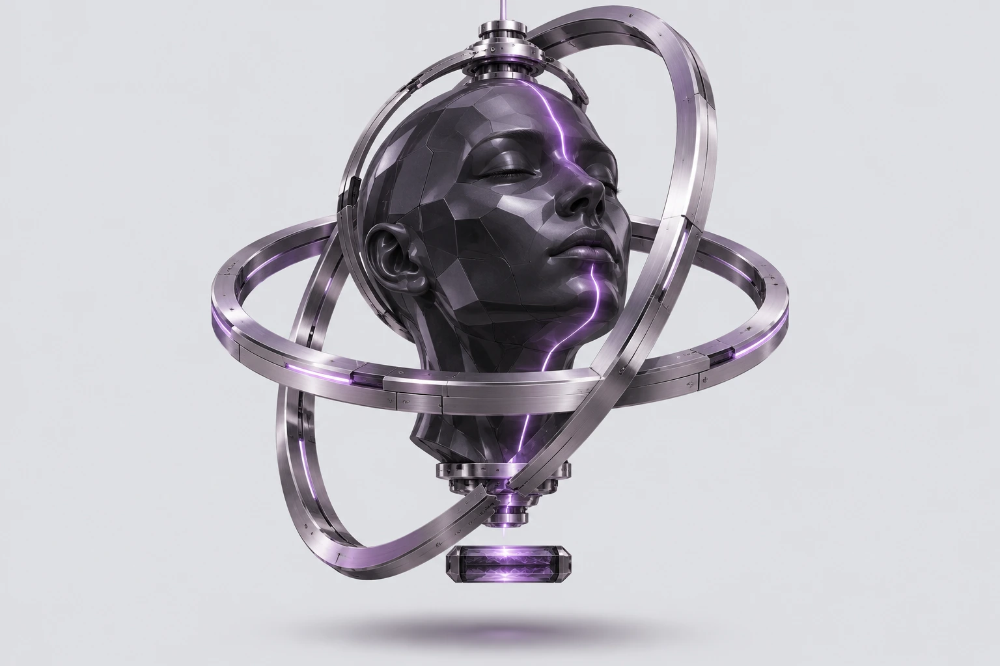
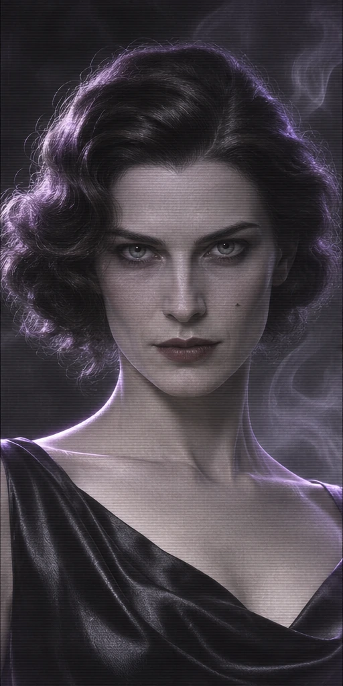

ЭКСПЕРИМЕНТАЛЬНЫЙ АРХИВ
ЦИФРОВОГО СОЗНАНИЯ
ЦИФРОВОГО СОЗНАНИЯ
СИСТЕМА СТАБИЛЬНА
МОСКВА / ВНЕ ВРЕМЕНИ
МОСКВА / ВНЕ ВРЕМЕНИ


▥ СИГНАЛ_98.2ОТКРЫТ◉ ПРИСУТСТВИЕ ↗▥ ОБЪЕКТ_ВЫОТКРЫТЛИЧНОСТЬ НЕ ИСЧЕЗАЕТ.
ОНА МЕНЯЕТ НОСИТЕЛЬ.
ОНА МЕНЯЕТ НОСИТЕЛЬ.
СКАНИРОВАНИЕ
НЕЙРОННЫХ СЛЕДОВ _
34 56 73 / 99.7%
НЕЙРОННЫХ СЛЕДОВ _
34 56 73 / 99.7%
Что останется,
когда нас
не станет?3 СОЗНАНИЯ.
1 ВОЗМОЖНОСТЬ
ПРОДОЛЖИТЬСЯ.
когда нас
не станет?3 СОЗНАНИЯ.
1 ВОЗМОЖНОСТЬ
ПРОДОЛЖИТЬСЯ.
ПО МОТИВАМ «МАСТЕРА И МАРГАРИТЫ»МЕЖДУ ПАМЯТЬЮ И БЕССМЕРТИЕМ / 01